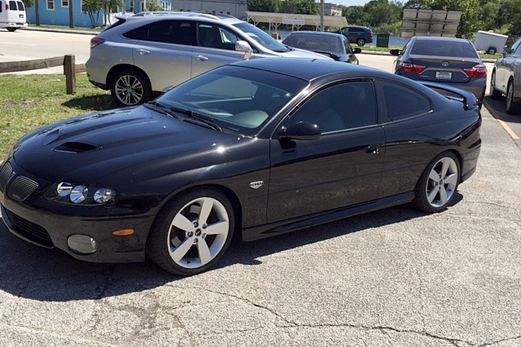

About Me
Hi there, my name is Brian Calderon and im here to tell you a little bit about myself. After graduating High School, i wasnt really sure what to do so then i decided to give college a try and thus i ended up attending Devry University of Fresno. Two semesters past by before i realised that college was not meant for me. I joined the Army at the glorious age of 18 and remained active duty for close to 7 years. Upon my Honorable Discharge i began working as Welder/Fabricator for various Agricultural Companies and Oil refineries for a few years, it was then that i started noticing the impact my body had taken due to deployments and military life. Now i am a disabled Veteran looking for a change of pace that doesnt require me to do alot of hard physical labor. Computer science and learning how the internet works have always been a huge interest of mine, i just never capitalized on it until now.